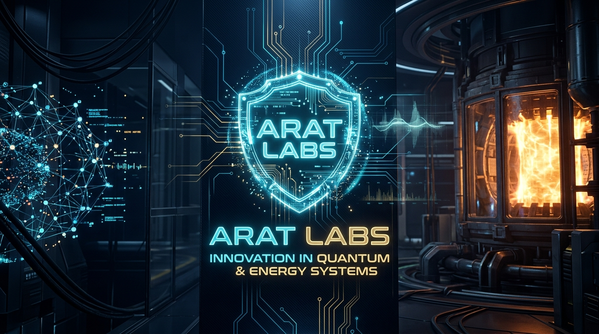

Teknolojide Devrimi Hedefleyen Bağımsız Araştırma ve Üretim Şirketi
Bizim inancımıza göre zeka; devasa veri merkezlerinde hapsolmuş, yalnızca istatistiksel olasılık dağılımları üreten monolitik bir yapı olamaz. Gerçek zeka; çevresiyle etkileşime giren, belirsizlik (sürpriz) anında hayatta kalabilen, kendi enerjisini yönetebilen ve kısıtlı donanım kaynaklarıyla dahi otonom kararlar alabilen "bedenlenmiş" (embodied) bir sistem olmalıdır.
ARAT AGI RESEARCH
LAB-01Serbest Enerji Prensibi (Free Energy Principle), Hiyerarşik Aktif Çıkarım (Active Inference) ve Kuantum Biliş (Quantum Cognition) teorilerine dayalı otonom zihin ağları araştırması.
ARAT OMEGA EW
LAB-02Elektromanyetik spektrumda otonom egemenlik kurmayı hedefleyen Bilişsel Elektronik Harp suite'i. Kapalı çevrim OODA (Observe-Orient-Decide-Act) döngüsü.
ARAT ENERGY (VOLT)
LAB-03Kuantum Termodinamiği, Füzyon Plazma Kararlılığı, Katı Hal Güç Dağıtımı ve Termodinamik Serbest Enerji Hasadı araştırmaları.
BİLİŞSEL BAĞLANTI GRAFİĞİ (NEURAL NETWORK)
AKTİF ÇIKARIM & SERBEST ENERJİ SİMÜLATÖRÜ
Ajan, çevresel belirsizliği (serbest enerjiyi) minimize etmeye çalışır. Hedefe ulaşmak için "sürpriz" olasılığını azaltan yollar arar.
* Grid'e tıklayarak Engel koyun. Shift+Tık: Hedef, Ctrl+Tık: Ajan yerleştirir.
MATEMATİKSEL ALTYAPI & UÇ YAPAY ZEKA SPEC
Varyasyonel Serbest Enerji (Free Energy Principle):
Burada \(q(\vartheta)\) ajanın içsel bilişsel durumunu temsil eder. Ajan, duyusal verileri alıp eylem üreterek \(F\)'yi minimize eder.
Kuantum Lindblad Master Denklemi:
Bilişsel sistemde karar verme süreçlerindeki kuantum dalgalanmalarını simüle etmek için kullanılır.
C++ Deterministic Inference Specs:
- Arena Memory Allocation: Sıfır "dynamic allocation overhead" garantisi.
- Custom GELU & SwiGLU: SIMD / AVX-512 el ile optimize edilmiş çekirdekler.
- Sensor Fusion: Genişletilmiş Kalman Filtresi (EKF) matris işlemleri için optimize BLAS kütüphanesi.
SDR SPEKTRUM ANALİZÖRÜ (RF SPECTRUM)
COGNITIVE OODA LOOP DECISION ENGINE
Bayesian Karar Matrisi Karşılaştırması (Strateji Seçimi)
| Karşı Strateji | Beklenen Spektrum Hakimiyeti | SWaP-C Maliyeti | Bayesian Başarı Olasılığı |
|---|---|---|---|
| DRFM Karıştırma (Gürültü Barajı) | 0.89 | Orta | 0.942 |
| Frekans Takip Çevrimli Karıştırma | 0.72 | Düşük | 0.681 |
| Mülti-Modlu Yalancı Hedef Üretimi | 0.95 | Yüksek (Yoğun CPU) | 0.895 |
SWaP-C GÖMÜLÜ TELEMETRİ MONİTÖRÜ
BİLİŞSEL AKILLI ŞEBEKE (SMART MICROGRID FLOW)
FÜZYON MANYETİK TUTULUM (TOKAMAK PLASMA)
TERMODİNAMİK & ENERJİ MATEMATİĞİ
Helmholtz Serbest Enerji & İş Dönüşümü:
Bilişsel sistemlerimiz açık termodinamik dengesizlik koşullarında minimum entropi üretimiyle maksimum ekserji elde etmeyi hedefler.
Onsager Karşılıklılık Bağıntıları:
Termoelektrik ve elektromanyetik akıların kuantum ölçeğinde çapraz eşleşmesini modelleyerek sıfır kayıplı mikro enerji hasatlama altyapısı sağlar.
Katı Hal Güç & Depolama Altyapısı:
- GaN Güç Dönüştürücüleri: 100 kHz - 1 MHz yüksek frekanslı anahtarlama ve %99.4 güç verimliliği.
- Lityum-Seramik Katı Hal Bataryalar: 650 Wh/kg spesifik enerji yoğunluğu ve sıfır termal kaçak riski.
- Süperiletken Manyetik Enerji Depolama (SMES): Milisaniye altı tepki süresiyle kesintisiz taktik güç beslemesi.
OPERASYONEL GÖREV SEÇİMİ
OMEGA Spektrum Devriyesi
İHA platformumuz sınır hattında uçuş gerçekleştirirken, düşman hava savunma radarları (LPI radar) tespit edilecek ve Bayesian karar mekanizması tarafından otomatik karıştırma (Jamming) başlatılacaktır.
GÖREV TESPİT VE AKIŞ ZAMAN ÇİZELGESİ (REAL-TIME TIMELINE)
Simülasyonu başlatmak için soldaki panelden görev seçip "GÖREVİ BAŞLAT" butonuna basınız.